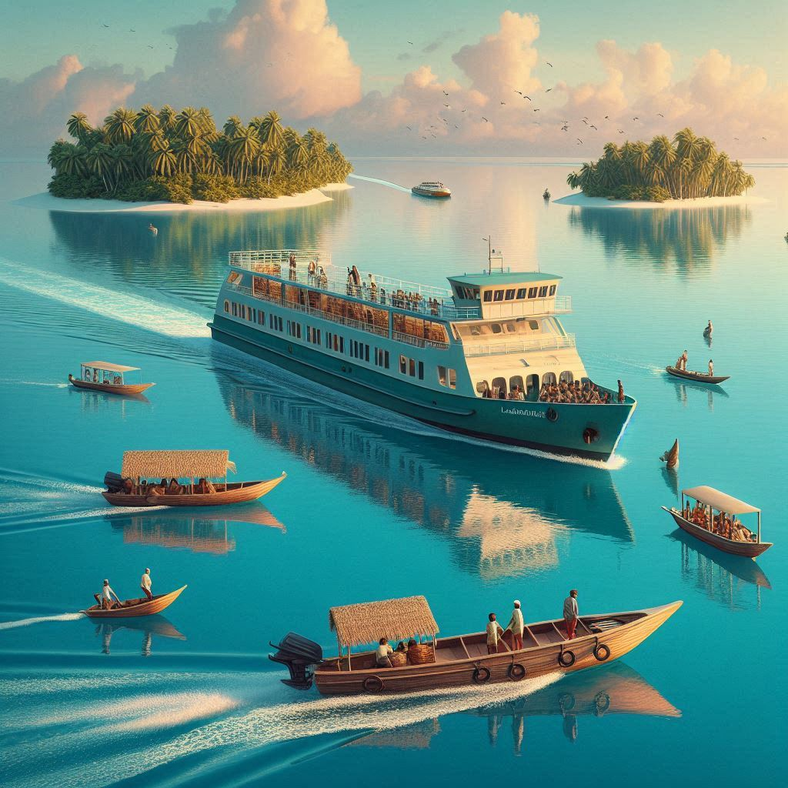
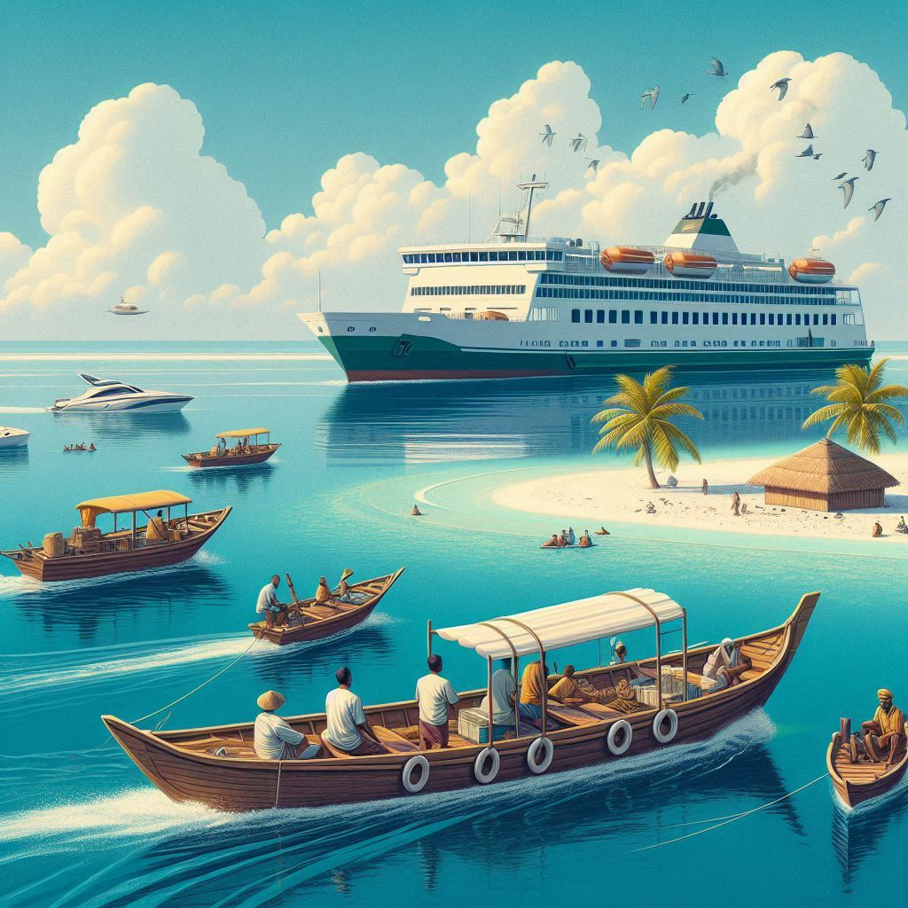

1. Travel to and within Lakshadweep:
Lakshadweep, a cluster of islands located off the southwestern coast of India, is a popular destination for
those seeking a tranquil and unique travel experience. The islands are well-connected to the mainland and
other
parts of India, although accessibility can sometimes be limited due to the remote nature of the archipelago.
2. How to Reach Lakshadweep:
- 1. By Air:
- Airports in Lakshadweep: The main entry point to Lakshadweep by air is
Agatti Island, which has a small airport with regular flights from Kochi
(Kerala).
- Flights to Agatti: Flights are available from Kochi International
Airport to Agatti, which is the gateway for visitors traveling to other islands in
Lakshadweep. The flight duration is approximately 1.5 hours.
- Helicopter Services: Once in Agatti, visitors can take helicopter services
that
operate between various islands, such as Kavaratti, Bangaram, and
Kadmat.
These are typically operated by Pawan Hans.
- 2. By Sea:
- Ships and Ferries: There are regular passenger ship services operated by
the
Lakshadweep Administration connecting Kochi to various islands in Lakshadweep.
These ships generally take about 14-20 hours to reach the islands, depending on the
destination.
- Ferry Services: Ferry services also operate between islands, and these are
used
to travel from one island to another within Lakshadweep. However, ferry services are
seasonal
and may not be available at all times of the year.


3. Traveling Within Lakshadweep:
- 1. Local Transport:
- Boats: The primary mode of transportation between the islands is by
boat. Local boats are used for short trips between islands or for accessing remote
areas
within a particular island.
- Bicycles and Motorbikes: On many of the islands, particularly the smaller
ones,
bicycles and motorbikes are the preferred mode of travel for locals and
tourists
alike. Renting a bike or a cycle is a popular option for exploring islands at your own pace.
- 2. Island Tours:
- Scuba Diving and Snorkeling: Lakshadweep is renowned for its coral
reefs, and many tourists travel to the islands for water sports such as scuba
diving, snorkeling, and kayaking. These activities are available at
popular islands like Bangaram and Kadmat, which can be accessed by boat or
ferry.
- Island Hopping: Many visitors indulge in island hopping, where they
travel between several islands, such as Kavaratti, Minicoy, and
Kalapeni,
to explore the diverse landscapes, beaches, and marine life each has to offer.
- 3. Accommodation and Resorts:
- While there are limited resorts and guesthouses on some islands, Kavaratti and
Bangaram are popular for having well-developed tourist facilities. Tourist
resorts
on these islands offer a range of accommodation options, from basic cottages to luxurious
resorts, catering to both budget travelers and those seeking more comfort.
4. Best Time to Visit:
The best time to visit Lakshadweep is between October and May, when the weather is pleasant, and
the
sea is calm, ideal for water-based activities. The monsoon season (June to September) is characterized
by
heavy rains and rough seas, which may limit travel to and between the islands.
5. Conclusion:
Traveling to Lakshadweep offers a chance to experience one of India’s most scenic and tranquil
destinations,
with its pristine beaches, coral reefs, and vibrant marine life. While the journey to Lakshadweep might
require some planning, especially in terms of flights and ferries, the islands' beauty and peaceful
ambiance
make it a worthwhile destination for travelers looking to escape the bustle of urban life.